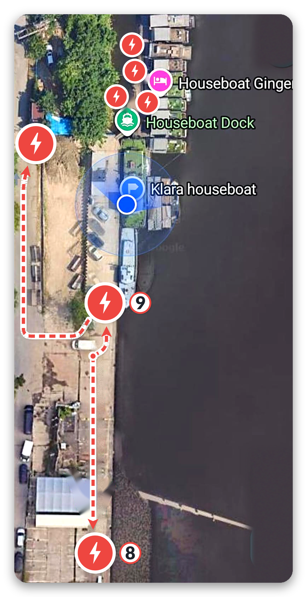

Stromausfall – Erste Hilfe
Wenn Sie in der Lage sind, an einem Strombrett zu arbeiten, überprüfen Sie die Platten wie auf diesem Bild. WICHTIG: Tragen Sie immer Gummisohlen, wenn Sie elektrische Vorrichtungen oder Geräte berühren!
Siehe unten und kontaktiere uns bei Bedarf! Kontaktieren Sie uns

Die roten Punkte zeigen die Lage der Schalter, die Sie auf die Stellung „oben“ prüfen sollten.
Prüfen Sie zuerst den elektrischen Schaltkasten in Ihrem Hausboot: alle Schalter sollten oben stehen.

Alle Schalter sollten eingeschaltet sein. (es sei denn, es gibt ein Zeichen, Band oder etwas Ungewöhnliches).

Elektrische Panels sind am Dock, ähnlich wie diese. Einige sind hintereinander.

Überprüfen Sie die Position in der Nähe des blauen Tores.

Diese können auch gestolpert werden.

Am Anfang des Parkplatzes überprüfen Sie, ob Nummer 9 alle Unterbrecher eingeschaltet hat (


Nr. 9 drinnen (Sie brauchen einen Schlüssel oder etwas, das den Quadratpfeil dreht)
Tipp: Eine Schere kann helfen, das quadratische Loch des Griffs zu drehen, um die Nummer 9 zu öffnen.
WICHTIG: Schließen Sie die Tür des Kastens danach immer wieder, besonders bei Regenwetter.

Weiter entfernt hat Nummer 8 ein paar Schalter, die auch an sein müssen.
Tipp: Eine Schere kann helfen, das quadratische Loch des Griffs zu drehen, um die Nummer 8 zu öffnen.
WICHTIG: Schließen Sie die Tür des Kastens danach immer wieder, besonders bei Regenwetter.

Überprüfen Sie das drinnen. Überprüfen Sie immer, ob niemand weiter unten arbeitet!
WICHTIG: BITTE MELDEN SIE, WELCHER SCHALTER NICHT FUNKTIONIERT HAT. MACH EIN FOTO VOR UND NACH.
Stromausfälle in Hausbooten treten aufgrund von Kapazitätsgründen häufiger auf als in einer Wohnung und mehr Anforderungen aufgrund des Wetters vor allem an sehr warmen oder sehr kalten Tagen.
Diese Seite wurde automatisch aus dem englischen Gästeführer übersetzt. Im Zweifel gilt die englische Version. Englisches Original